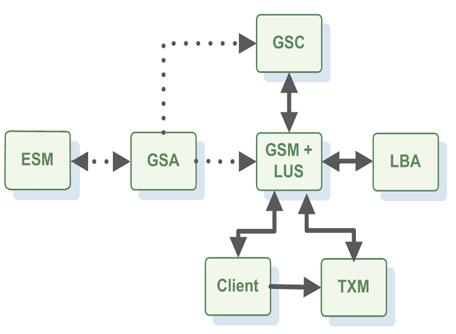

Section Summary: This section gives a detailed description of the GigaSpaces deployment & runtime environment.
The GigaSpaces Runtime Environment
The basic unit of deployment in the GigaSpaces XAP platform is the Processing Unit.
Once packaged, a processing unit is deployed onto the GigaSpaces runtime environment, which is called the Service Grid. It is responsible for materializing the processing unit's configuration, provisioning its instances to the runtime infrastructure and making sure they continue to run properly over time.
| When developing your processing unit, you can run and debug the processing unit within your IDE. You will typically deploy it to the GigaSpaces runtime environment when it's ready for production or when you want to run it in the real-life runtime environment |
The service grid is composed of a number of components:

The GigaSpaces Agent (GSA)
The GigaSpaces Agent (GSA) has been introduced with GigaSpaces XAP 7.0. You can think of it as a daemon or a background service, which can start and stop any of the other runtime components (at the process/JVM level).
Typically, the GSA is started with the hosting machine's startup. Using the agent, you can bootstrap the entire cluster very easily, and start and stop additional GSCs, GSMs and lookup services at will.
All of the above components are fully manageable from the GigaSpaces management interfaces such as the GUI and the administration and monitoring API.
The GigaSpaces Container (GSC)
When a processing unit is deployed, its instances are provisioned to the running GigaSpaces containers. The GigaSpaces container provides an isolated runtime for the processing unit instance, and exposes its state to the GigaSpaces Manager (GSM).
The GigaSpaces Manager (GSM)
The GigaSpaces Manager is the component which manages the deployment and life cycle of the processing unit.
Using one of GigaSpaces deployment tools (e.g. the GUI), you upload the processing unit jar to the GSM. The GSM analyzes the deployment descriptor and determines how many instances of the processing unit should be created, and which GSCs should run them.
It then ships the processing unit code the running GSCs and orders them to instantiate the processing unit instances. This phase in the deployment process is called provisioning.
Once provisioned, the GSM constantly monitors the processing unit instances to determine if they're functioning properly or not.
When a certain instance fails, the GSM identifies that and re-provisions the failed instance on to another GSC, thus enforcing the processing unit's SLA.
In a typical deployment you would have two or three GSMs so that if one of them fails, another takes over. At any given point in time, each deployed processing unit is managed by a certain GSM, and the other running GSMs serve as its hot standby. If it fails for some reason, one of the standbys takes over and start managing and monitoring the processing units that the failed GSM managed.
The Lookup Service (LUS)
The lookup service is the component responsible for listing all the available runtime components on the network, namely GSCs and GSMs.
Whenever a certain component starts, the first thing it does is connecting to the lookup service and registering itself with it. Using the lookup service, the GSM can know for example about all the running GSCs in the network. Typically, you would have 2 lookup services running in your environment to maintain high availability. Note that the lookup service can run within a GSM, or in standalone mode using its own JVM.
By default, other components find the lookup services using the jini protocol over multicast. If multicast is not enabled in the network, this can be overridden and the explicit address of the lookup service can be specified. Please refer to this page for more details.
Another important attribute in that context is the lookup group. The lookup group is a logical grouping of all the components that belong to the same runtime cluster. Using lookup groups, you can run multiple deployment of the same processing unit on the same physical infrastructure, without them interfering with one another. For more details please refer to this page
The Elastic Service Manager (ESM)
The Elastic Service Manager (ESM) manages the Elastic Processing Unit together with the GSM.
The Apache Loader-Balancer Agent (LBA)
The Apache Load Balancer Agent is an optional component used when deploying web applications.
The Transaction Manager (TXM)
This is an optional component. When executing transactions that spans multiple space partitions you should use the Jini Transaction Manager or the Distributed Transaction Manager. See the Transaction Management section for details.
Section Contents
- The GigaSpaces Agent — A process manager that manages Service Grid processes such as GSM, GSC and LUS
- The GigaSpaces Container — A container which hosts Processing Unit Instances provisioned to it by the GSM
- The GigaSpaces Manager — Manages Processing Unit deployments and GigaSpaces Containers
- The Lookup Service — A registry of services (GSM, GSC, Space Instances, Processing Unit Instances) that can be lookup up using it.